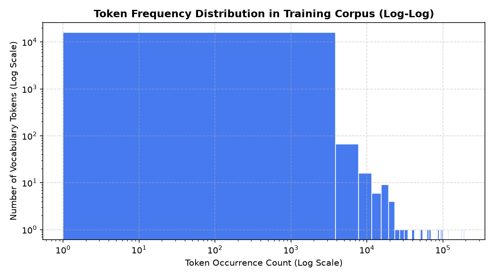
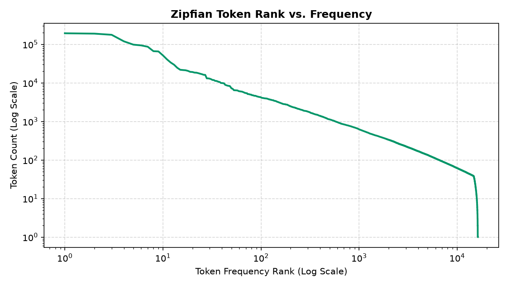
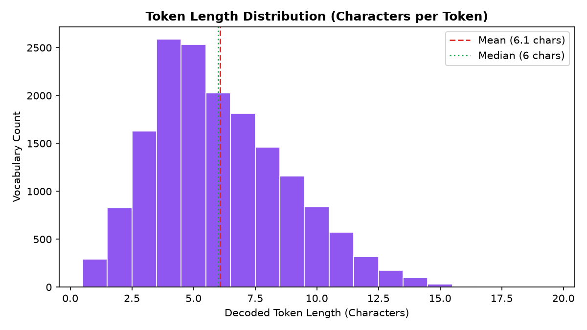
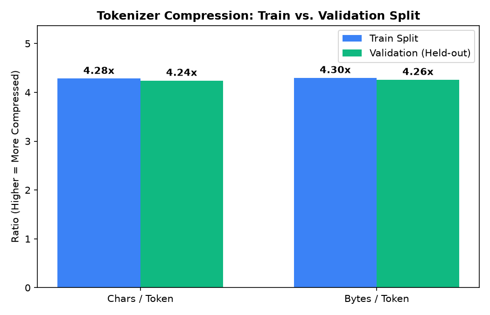

Trained strictly on FineWeb-Edu training documents with 16,384 Vocabulary and Hugging Face Tokenizers.
16,384
4,500
5,009,269
4.28 chars/tok
4.24 chars/tok
5,023,899 tok/s
| Metric | Training Split (4,500 docs) | Validation Split (500 docs, Held-out) |
|---|---|---|
| Total Characters | 21,449,471 | 2,399,477 |
| Total UTF-8 Bytes | 21,523,293 | 2,409,117 |
| Total Tokens | 5,009,269 | 565,663 |
| Characters per Token | 4.282 | 4.242 |
| Bytes per Token | 4.297 | 4.259 |
| Encoding Throughput | 5,023,899 tokens/s (20.6 MB/s) | 2,358,338 tokens/s |
| Decoding Throughput | 6,005,934 tokens/s | - |




| Category | Count | Notes |
|---|---|---|
| Singletons (occurred once) | 47 | Rare words/stems |
| Tokens with count ≤ 5 | 212 | Low-frequency merges |
| Tokens with count ≤ 10 | 424 | Infrequent tokens |
| Unused tokens (count = 0) | 143 | Reserved special tokens (<|pad|>, <|bos|>, <|eos|>) |
| Average Token Length | 6.08 chars | Median: 6 chars (Range: 0 - 19 chars) |
| Token ID | Raw Representation | Decoded | Corpus Frequency | % of Total Tokens |
|---|---|---|---|---|
264 | Ġthe | ' the' | 193,870 | 3.87% |
14 | , | ',' | 189,888 | 3.791% |
16 | . | '.' | 177,059 | 3.535% |
281 | Ġof | ' of' | 119,802 | 2.392% |
291 | Ġand | ' and' | 98,324 | 1.963% |
201 | Ċ | '\n' | 93,947 | 1.875% |
292 | Ġto | ' to' | 86,782 | 1.732% |
260 | Ġa | ' a' | 66,560 | 1.329% |
285 | Ġin | ' in' | 65,519 | 1.308% |
15 | - | '-' | 51,721 | 1.033% |
315 | Ġis | ' is' | 40,780 | 0.814% |
334 | Ġthat | ' that' | 33,792 | 0.675% |
329 | Ġfor | ' for' | 29,561 | 0.59% |
355 | Ġ( | ' (' | 24,646 | 0.492% |
346 | Ġas | ' as' | 21,928 | 0.438% |
358 | Ġare | ' are' | 21,554 | 0.43% |
357 | Ġwith | ' with' | 21,289 | 0.425% |
333 | Ġon | ' on' | 20,498 | 0.409% |
311 | Ġbe | ' be' | 19,354 | 0.386% |
85 | s | 's' | 19,171 | 0.383% |